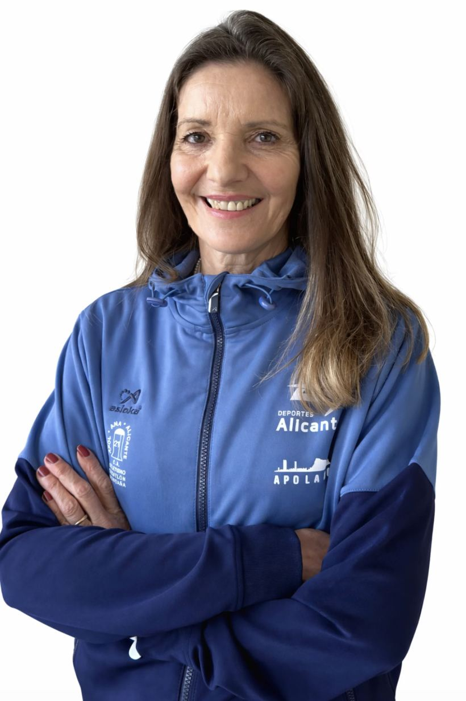
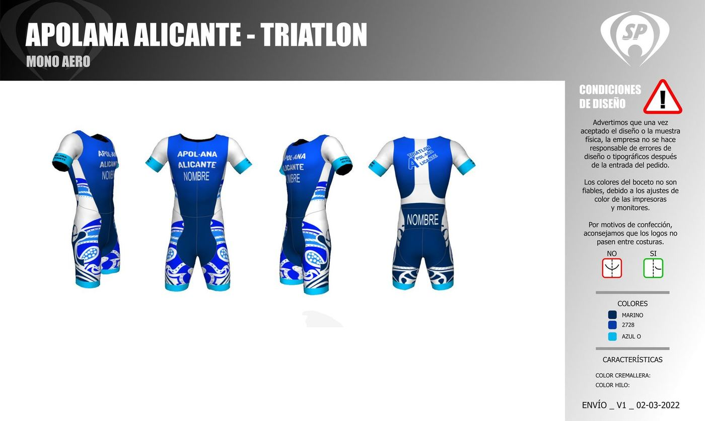

1988 — hoy
Treinta y ocho temporadas
El club nace en 1988 en el barrio de Villafranqueza, con una pista de tierra, dos entrenadores y treinta chavales. La primera equipación se pagó con una rifa de Navidad.
En los noventa llegan las primeras medallas autonómicas y la escuela empieza a llenarse. En 2004 se abre la sección de running de adultos, que hoy es la más numerosa, y en 2012 la de triatlón.
Desde 2019 el club gestiona además las escuelas municipales de atletismo y triatlón y el programa de deporte adaptado, con la misma idea de siempre: que entrenar sea un plan al que apetezca volver.
1988Fundación del club en Villafranqueza
1996Primera medalla autonómica en categoría cadete
2004Nace la sección de running de adultos
2012Sección de triatlón y primeras ligas por equipos
2019El club asume las escuelas municipales y el deporte adaptado
2026420 atletas y siete secciones en activo
Archivo fotográfico
EL CLUB, TEMPORADA A TEMPORADA



